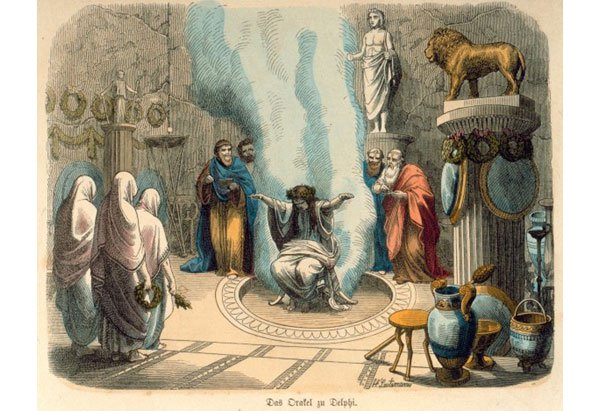
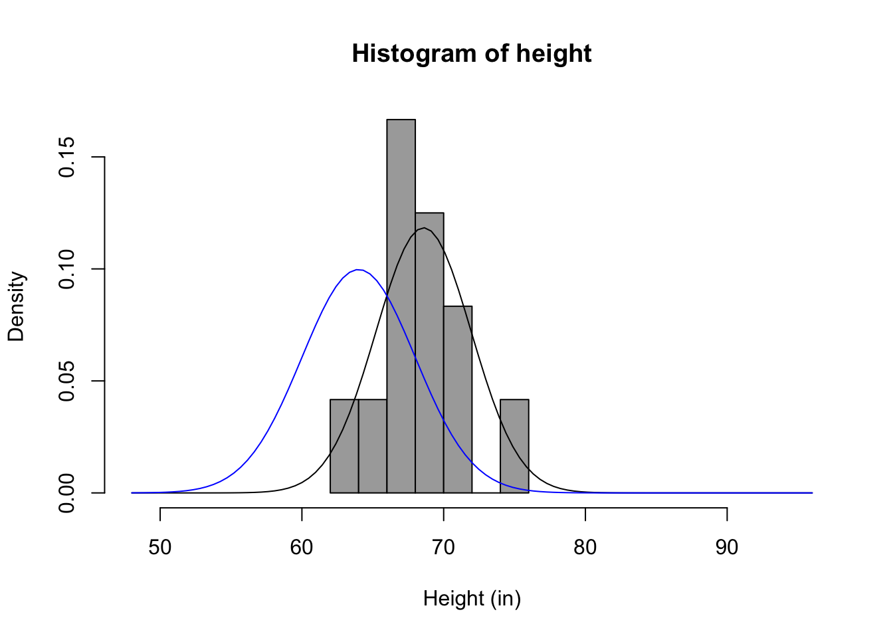
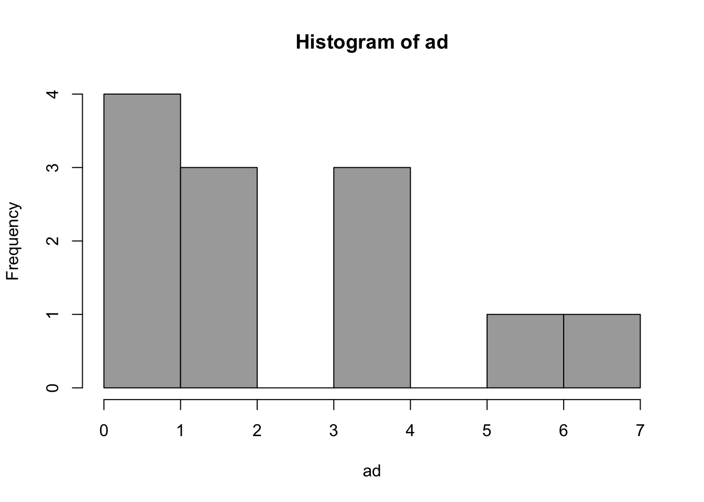

A Modeling Approach
My Philosophy of Science
My work is grounded in a post‑positivist philosophy of science that takes falsifiability and critical inquiry as central to building knowledge. I approach scientific questions with the assumption that all models are provisional: useful for understanding patterns and mechanisms, but always open to refinement or replacement in light of new evidence.
I am deeply influenced by Karl Popper’s emphasis on bold conjectures and severe tests (Popper 1959), Imre Lakatos’s vision of progressive research programs (Lakatos 1978), and Paul Meehl’s critique of weak theories in the social sciences (Meehl 1967). From these traditions I adopt a stance that values theory development, transparency, and the systematic attempt to disconfirm rather than merely confirm our ideas.
At the same time, I work in fields—education, social, behavioral, and health sciences—where systems are complex, adaptive, and context‑dependent. Traditional mechanistic approaches, while powerful, often oversimplify. My research therefore draws on generative methods—including agent‑based modeling, simulation, and computational approaches—to explore how causal mechanisms give rise to observed patterns. This orientation informs the development of what I call Generative Causal Explanation (GCE): a methodology that seeks to understand not just whether an effect exists, but how it emerges from interacting processes over time and across levels of a system.
I see data analysis, modeling, and theory building as a single, integrated process.
- Data collection is guided by theory, not just convenience.
- Analysis should be transparent, probabilistic, and oriented toward ruling out alternatives.
- Models are tools for explanation, not just prediction.
In all of this, I strive for a philosophy of science that is empirically rigorous, conceptually clear, and methodologically pluralistic, while remaining oriented toward practical questions in education and related fields. My goal is to help develop methods that can reveal causal mechanisms in complex systems—methods that broaden access to understanding rather than narrowing it.
The Modeling Approach
A great introduction to the modeling approach is an article by Rodgers (2010). I highly recommend reading this article, as it give a great overview of the limitations of strict hypothesis testing, and the advantages of using a modeling approach.
What are Scientific Models?
Models are explicit statements about the processes that give rise to observed data. - Little (2013)
A mathematical model is a set of assumptions together with implications drawn from them by mathematical reasoning. - Neimark and Estes (1967 quoted in Rodgers, 2010)
Goals of science
Often, the three goals of science are stated:
- Describe
- Predict
- Explain
Models are important for all these goals.
Models are representations of how our key constructs are related. They can be narrative, graphical, or mathematical. Models match reality in some way, and are simpler than reality.
Why do we need models?
If we acknowledge the complexity and interrelatedness of reality, and our goal is the perfect model, we soon realize To model anything, we would have to model everything!
And example will help illustrate this.
Imagine stepping off the subway in London for the first time. You want to visit Westminster Abbey, but you have no idea which way to go. A map becomes indispensable: it helps you navigate an unfamiliar city, plan your route, and avoid getting lost. Now suppose someone approaches and offers you a life‑size, three‑dimensional map of London—a replica of every street, every building, every curve in the pavement. It would be impossibly large, completely impractical to carry, and no more useful than wandering without a map at all.
This illustrates an important truth about scientific models: a good model is not a perfect replica of reality. A street map, though vastly simpler than the city itself, is far more helpful because it highlights what matters for a specific task—streets, intersections, and landmarks—while leaving out the clutter.
So what is the best kind of map? That depends on your specific task needs. If you are traveling by subway or car, a street map is ideal because it emphasizes roads and connections. But if you are backpacking through the Rocky Mountains, you’d reach for a topographical map, which captures elevation, terrain, and trails rather than street names. Notice that what is important depends on the task at hand - if you are taking a car through a city elevation is not important and therefore ignored in the street map, but if you are walking across rugged terrain, elevation is critical information, so is a central part of a topographical map.
In the same way, scientific models are valuable not because they mirror reality in every detail, but because they simplify in just the right way to answer a particular question. A good model fits its purpose, guiding us through the complexity of the world without pretending to duplicate it.
All models are wrong, but some are useful - George Box
Occam’s Razor
- We need to balance explanatory power (reducing error) with parsimony (simplicity)
- We want to constantly ask: “What do we gain by adding complexity?”
- Proportion Reduction in Error (PRE)
Scientific Models are NOT Oracles

Scientific Models are Golems
Simple Models: Errors and Parameters
The Basic Model
Narrative, Numeric, and Graphical Models
Let’s start with a simple narrative model:
“Peer pressure causes smoking.”
We can start to convert this to other forms of model. It is often helpful to take our narrative model an turn it into a graphical model.
Here is a simple graphical model of our example model:
Here is a generalized graphical representation of our model.
Here is the general form of a numerical model (an equation) with the three main components: \[ \text{DATA} = \text{MODEL} + \text{ERROR} \] where,
- DATA = What we want to understand or explain
- MODEL = A simpler representation of the DATA
- ERROR = Amount by which the model fails to explain the data
What is another term for error?
We could take our graphical model and turn it into an equation:
\[ \text{Smoking} = \text{Friend Smokes} + \text{ERROR} \]
A Simple Model
A mathematical representation
\[ \text{DATA} = \text{MODEL} + \text{ERROR} \] Population model:
\[ Y_i = \beta_0 + \varepsilon_i \]
Sample model:
\[ y_i = b_0 + e_i \]
Describing Error
Simplest Model
Zero Parameters
\[ Y_i = B_0 + \varepsilon_i \]
Where \(B_0\) is some a priori value, not based on these DATA, but provided by some theoretical consideration
- e.g. temperature = 98.6 degrees
- probability if coin is fair = .50
- change over time = 0
Not common in behavioral sciences
Simple Model
One Parameter
\[ Y_i = \beta_0 + \varepsilon_i \] Where \(\beta_0\) is an unknown value. The MODEL makes a constant prediction for all cases, but the value of that prediction is to be estimated from the data, so to make ERROR as small as possible.
The estimated MODEL is
\[ Y_i = b_0 + e_i \]
Where \(b_0\) is the actual prediction made for each case, estimated from the data, minimizing ERROR.
This estimated MODEL can also be written as
\[ \hat{Y_i} = b_0 \]
Note the difference between the two errors in the parameter model ( \(\varepsilon_i\) ) and the estimated model ( \(e_i\) ). The latter is an estimate of the former, just as \(b_0\) is an estimate of \(\beta_0\).
\[ \varepsilon_i = Y_i - \beta_0 \]
\[ e_i = Y_i - b_0 = Y_i - \hat{Y_i} \]
Measures of Central Tendency and Dispersion
- Want to find best estimate of \(\beta_0\) that minimizes not individual \(e_i\)’s but some aggregate measure of error.
- Different ways of aggregating errors lead to different estimates - alternative measures of Central Tendency
- Different ways of aggregating errors lead to different estimates of “Typical Error” - alternative measures of Spread
- This is “descriptive statistics”
Measures of Central Tendency and Dispersion
Minimize Sum of Errors? - Why not?
Minimize Sum of Absolute Errors (SAE). - best estimate of \(\beta_0\) is the Median
What happens in presence of extreme outlier?
Absolute Errors and Outliers
Median Absolute Deviation (MAD) as typical measure of spread (median value of \(e_i\) given minimization of SAE)
Measures of Central Tendency and Dispersion
- Minimize Sum of Squared Errors. Why?
- best estimate of \(\beta_0\) is the Mean
- What happens in presence of outlier?
- Squared Errors and Outliers -Mean Square Error (Variance) as typical measure of spread (mean value of \(e_i^2\) given minimization of SSE)
Formalities of Estimation
Simple Model
DATA = MODEL + ERROR
\[ Y_i = \beta_0 + \varepsilon_i \] \[ Y_i = b_0 + e_i \] \[ \hat{Y_i} = b_0 \] \[ Y_i = \hat{Y_i} + e_i \]
\[ e_i = Y_i - \hat{Y_i} \]
Aggregate Error: Sum of Absolute Errors
\[\text{Error} = \sum_{i=1}^{n} |e_i| = \sum_{i=1}^{n}|Y_i - \hat{Y_i} | = \sum_{i=1}^{n} | Y_i - b_0|\]
- Minimization estimates \(\beta_0\) as the Median
- Measure of Spread: Median Absolute Error or Median Absolute Deviation (MAD)
Aggregate Error: Sum of Squared Errors
\[\text{Error} = \sum_{i=1}^{n} e_i^2 = \sum_{i=1}^{n} (Y_i - \hat{Y_i})^2 = \sum_{i=1}^{n} (Y_i - b_0)^2 = \sum_{i=1}^{n} (Y_i - \bar{Y})^2\]
- Minimization estimates \(\beta_0\) as the Mean
- Measure of Spread: Mean Squared Error (Variance)
Mean Squared Error Estimation
- Recall that if one estimated \(n\) parameters, ERROR would be zero.
- In computation of the MSE, we want to take into account the number of parameters estimated (and the number of additional parameters that could be estimated).
- General formula for MSE:
\[\text{MSE} = \frac{ \sum_{i=1}^{n} (Y_i - \hat{Y_i})^2}{n-p}\]
- Square root known as the “root mean square error”
Mean Squared Error Estimation
- In case of simple one-parameter model, \(p = 1\) and
\[\hat{Y_i} = b_0 = \bar{Y}\]
Accordingly,
\[\text{MSE} = \frac{ \sum_{i=1}^{n} (Y_i - \hat{Y_i})^2}{n-1} = s^2\]
And root mean square error is called the standard deviation
So variance is special case of MSE; MSE as unbiased measure of spread (or variance) of errors
Usual notion: descriptive statistics
Pick a measure of central tendency (mean, median, mode)
Pick a measure of spread
NO - pick a measure of aggregate error, estimates of \(\beta_0\) follow from that, along with estimates of typical error.
An Example
vars n mean sd median trimmed mad min max range skew kurtosis se
repht 1 12 67.83 3.66 68.00 67.80 2.97 61.0 75 14.0 0.10 -0.51 1.06
height 2 12 68.58 3.37 68.25 68.55 2.59 62.5 75 12.5 0.13 -0.72 0.97 repht height
repht 1.0000000 0.9804921
height 0.9804921 1.0000000Distribution of measured heights


References
Lakatos, Imre. 1978. The Methodology of Scientific Research Programmes. Cambridge: Cambridge University Press.
Meehl, Paul E. 1967. “Theory-Testing in Psychology and Physics: A Methodological Paradox.” Philosophy of Science 34 (2): 103–15.
Popper, Karl. 1959. The Logic of Scientific Discovery. London: Hutchinson.
Rodgers, Joseph Lee. 2010. “The Epistemology of Mathematical and Statistical Modeling: A Quiet Methodological Revolution.” American Psychologist 65 (1): 1–12. https://doi.org/10.1037/a0018326.